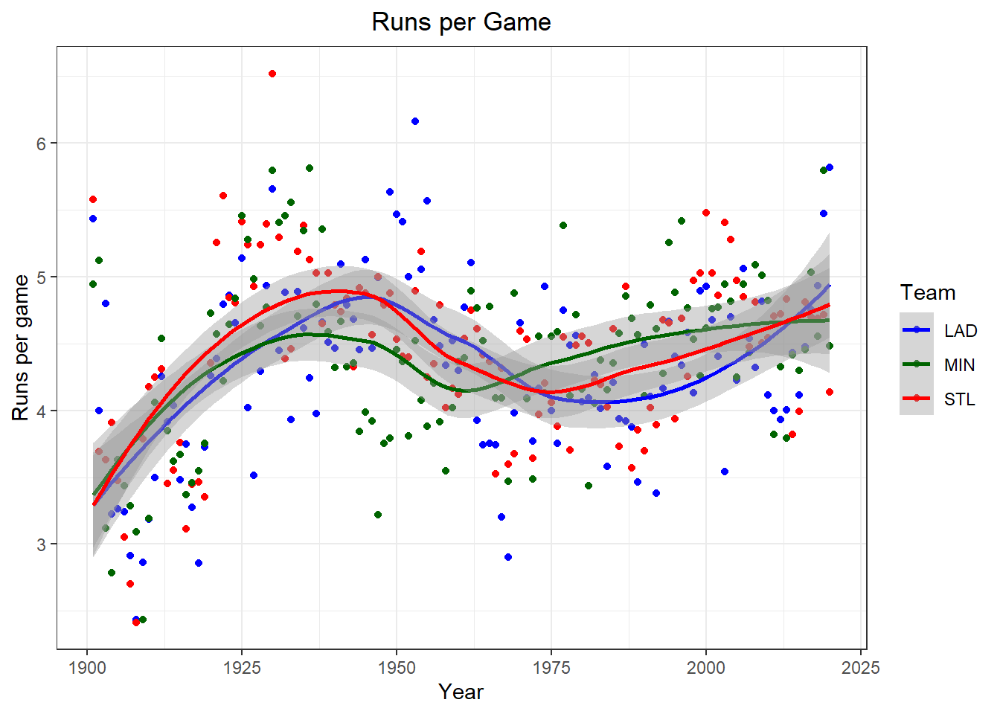

Introduction 2 R
2021-05-16
Chapter 1 The Prerequisites
This is an intro to R workshop for coders with little or no experience using R. Of course all levels or R users are welcome to attend and engage in the content. In this work shop we will learn basic R functions, reading help files, creating and importing data frames, for loops, while loops, and creating functions.
The material covered in this workshop closely follows the 2020 ResBaz intro to R course found here https://picoral.github.io/resbaz_intro_to_r/index.html
1.1 Why use R and R Studio
1.1.1 More coding, and less point and click
The results in R rely on a series of well defined commands rather than just pointing and clicking. This can allow you to have a better understanding and control of the results. The steps taken in the analysis can be saved making it fast to run the analysis again. This makes statisitical analysis easily reproducible, which is important when conducting research.
1.2 Wrote by the people for the people
There are 10,000 + packages that can be used in R. Packages are easy to download and implement. If you can’t find a package for your specific need, then you can create your own for yourself and others to use.
1.3 R has a large community
Thousands of people use R daily. Many of them are willing to help you through mailing lists and websites such as Stack Overflow.
1.4 R produces high-quality graphics
packages like ggplot allow users to create high quality graphics like the one below.

1.5 Open Source
Anyone can inspect the source code to see how R works. Because of this transparency, there is less chance for mistakes, and if you (or someone else) find some, you can report and fix bugs.